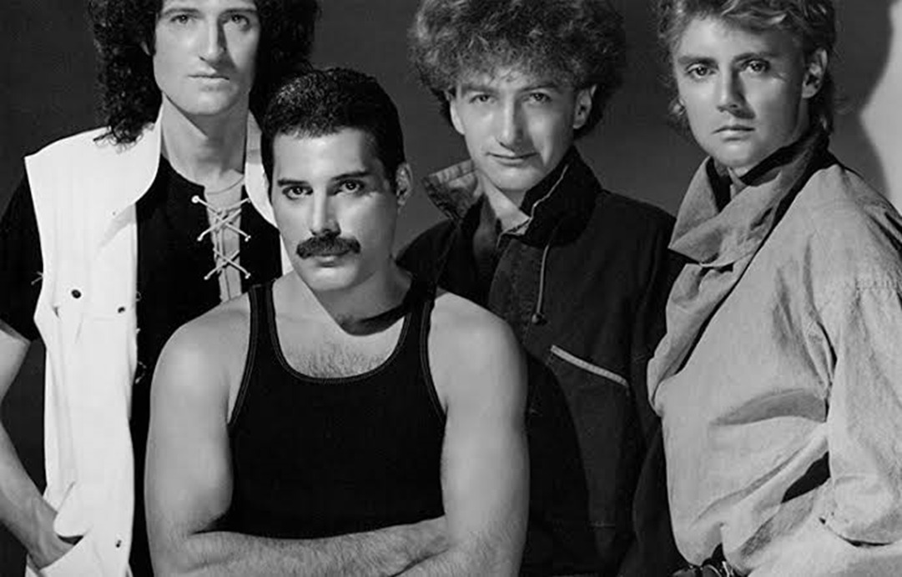

Músicas mais famosas
Who Wants To Live Forever
Ouça no SpotifyKiller Queen
Ouça no SpotifySomebody To Love
Ouça no SpotifyTrailer do filme
 Assista agora!Fotos


Depoimentos
"Queen não é apenas uma banda, é uma experiência! Cada música tem uma energia única, e a voz do Freddie Mercury sempre me emociona. Obrigada, Queen, por fazer parte da trilha sonora da minha vida!"
"Queen transcende gerações! Meus pais ouviam, eu ouço e meus filhos também vão ouvir. ‘Love of My Life’ sempre toca fundo no meu coração. O legado da banda é eterno!"
"Nenhuma banda conseguiu misturar rock, ópera e pop como o Queen! ‘Don’t Stop Me Now’ é meu hino pessoal!"
"Desde que ouvi ‘We Will Rock You’ pela primeira vez, me tornei fã! A energia dos shows, as letras marcantes e a presença de palco de Freddie Mercury fazem do Queen uma das maiores bandas de todos os tempos."
Biografia
Rock and Roll Hall of Fame
Em 2001, a banda foi incluída no Rock and Roll Hall of Fame, mas apenas Roger e Brian apareceram. Nesta mesma época, a dupla gravou "We Are the Champions" com Robbie Williams para o musical We Will Rock You. A participação se tornou célebre pelos comentários negativos de John Deacon ao jornal The Sun, afirmando que estava satisfeito por não ser envolver na gravação, e que Freddie era insubstituível
Queen fez história com suas performances
Toda banda lendária tem um momento inesquecível. Um momento que os impulsiona para a atmosfera superior da música rock. Para o Queen, essa performance aconteceu em 1985 no Live Aid. Eles só tocaram por 20 minutos, mas esses 20 minutos transformaram a banda em uma lenda. Durante uma seção de a cappella, Mercury segurou uma nota por tanto tempo e tão bem que o momento se tornou “A nota ouvida ao redor do mundo”. Em 2005, uma pesquisa da indústria musical apresentou a performance do Queen no Live Aid como a melhor de todos os tempos.